전기철도기사 (2008-07-27 기출문제)
1과목: 전기철도공학
1. 교류 강체 전차선로(R-Bar방식)에서 110mm2의 전차선을 사용할 경우, 스팬(Span)의 길이가 10m 일 때 지지점 중앙의 처짐(sag) f 는 약 몇 ㎜인가? (단, Span의 중량은 67.7N/m, 탄성계수는 69000N/mm2, y-y축의 관성모멘트는 339cm4이라 한다.)
- 3.1
- 4.9
- 7.5
- 11.0
(정답률: 알수없음)

2. 직류 전차선로에서 귀선로의 전기저항이 높아 전압강하 및 레일 전위의 상승을 억제하기 위해 설치하는 것은?
- 흡상선
- 보조귀선
- 인입귀선
- 중성선
(정답률: 알수없음)
3. 전차선만 1조로 구성되며 전차선을 스팬선 또는 빔 등의 지지점에 고정하는 구조와 전차선의 지지점에 짧은 로드나 와이어로 3각형을 구성하는 구조의 조가방식은?
- 직접 조가방식
- 심플 커티너리 조가방식
- 헤비 심플 커티너리 조가방식
- 콤파운드 커티너리 조가방식
(정답률: 알수없음)
4. 교류 전기철도에서 통신선에 전자유도장해를 경감하기 위하여 전차선과 부급전선사이에 시설하는 권선비가 1:1인 것은?
- 회전변류기
- 흡상변압기
- 단권변압기
- 스코트변압기
(정답률: 알수없음)
5. 원격감시, 제어 및 운용을 할 수 있는 시스템을 무엇이라 하는가?
- SCADA
- CC
- SS
- RTU
(정답률: 알수없음)
6. 전차선의 질량이 1.511kg/m, 장력이 1500kgf일 때 이 전차선의 파동전파속도는 몇 km/h인가?
- 245
- 325
- 355
- 410
(정답률: 알수없음)
7. 가공 전차선로에서 전차선의 흐름을 유발하는 용인이 아닌 것은?
- 부하 조건
- 기상 조건
- 선로의 조건
- 장력추 중량의 불균형
(정답률: 알수없음)
8. 전차선로의 가선방식에서 지하구간에 개발되어진 가선방식으로 도시 지하철구간의 대표적인 방식은?
- 가공단선식
- 가공복선식
- 강체단선식
- 강체복선식
(정답률: 알수없음)
9. 전철변전소의 순시 최대전력과 1시간 최대전력의 비를 어떤 시기(1개월 등)에 대하여 평균하면 약 얼마 정도 되는가?
- 1.5
- 2.5
- 3.5
- 4.5
(정답률: 알수없음)
10. 피제어소에 설치되어 변전설비로부터의 현장 정보를 취득, 분석하여 제어소의 통신제어장치로 송신하고 통신제어장치로부터의 제어명령을 수신 처리할 수 있도록 설치된 원격소 장치는?
- 주컴퓨터장치
- 인간/기계 연락장치
- 근거리 통신네트워크장치
- RTU 장치
(정답률: 알수없음)
11. 전기철도의 효과를 옳은 것으로만 나열한 것은?
- 수송능력 증강, 에너지 과다 사용, 지역 균형발전
- 수송능력 저하, 에너지 이용 효율 증대, 환경 개선
- 수송능력 증강, 수송원가 절감, 지역 균형발전
- 수송능력 증감, 수송원가 절감, 공해문제 심각
(정답률: 알수없음)
12. 전차선(원형 110mm2)의 잔존 단면적이 67.6mm2, 잔존 지름이 7.5㎜, 안전율이 2.2일 때 전차선의 허용장력은 약 몇 kgf 인가? (단, 이 전차선의 파괴강도는 35kgf/mm2으로 한다.)
- 745
- 946
- 1075
- 1183
(정답률: 알수없음)
13. 전기철도 교류 급전방식 가공전차선로에서 통신유도장해를 경감하기 위해 귀선레일에 병렬로 시설하여 운전용 전기를 변전소로 통하게 하는 전선은?
- 급전선
- 조가선
- 보호선
- 부급전선
(정답률: 알수없음)
14. 전차선 마모의 일반적 경향에 대한 설명으로 옳은 것은?
- 팬터그래프의 압상력이 크게 되면 전기적 마모는 증가하고 기계적 마모는 감소한다.
- 전차선의 마모는 집전전류의 대소에 크게 영향을 받는다.
- 경점 부근에서 팬터그래프 통과시에 접촉력이 크게 되는 전차선 개소는 마모가 늦다.
- 팬터그래프가 경량이고 추종성이 좋게 되면 전차선의 마모는 작게 되고 팬터그래프의 개수가 많으면 기계적 마모는 증가하게 된다.
(정답률: 알수없음)
15. 교류 급전방식에 비교한 직류 급전방식의 일반적인 특징으로 옳은 것은?
- 사고 발생시 선택차단이 용이하다.
- 대용량의 중거리 및 장거리 수송에 적합하다.
- 운전전류가 작아서 누설전류에 대한 대책이 필요 없다.
- 전압이 낮아 절연계급을 낮출 수 있다.
(정답률: 알수없음)
16. 전차선에 요구되는 성능으로 거리가 먼 것은?
- 연성이 좋아야 한다.
- 가선 장력에 대하여 충분히 견디어야 한다.
- 접속 개소의 통전 상태가 양호해야 한다.
- 집전장치 통과와 집전에 지장이 없어야 한다.
(정답률: 알수없음)
17. 직류 강체가선방식에서 전차선의 이동을 방지하기 위하여 설치하는 장치는?
- 건넘선장치
- 에어섹숀 죠인트
- 흐름방지장치
- 지상부 이행장치
(정답률: 알수없음)
18. 자기부상식 철도를 부상방식에 의하여 분류할 때 반발식의 특성으로 틀린 것은?
- 부상하는 일정 높이를 유지하는 상시제어가 필요하다.
- 초전도, 극저온 등의 기술이 필요하다.
- 정전시에는 저속으로 되기까지 낙하하지 않는다.
- 저속에서 주행저항의 일부인 자기 저항력이 크다.
(정답률: 알수없음)
19. 조가선의 접속 개소는 팬터그래프의 통과에 지장이 없도록 설치하여야 한다. 다음 중 조가선의 접속방법으로 사용되지 않는 것은?
- 쐐기형 클램프에 의한 방법
- 접속 공구에 의한 방법
- 압축 슬리브에 의한 방법
- 용접에 의한 방법
(정답률: 알수없음)
20. 전기차에 공급된 운전용 전력이 변전소로 되돌아 가는데 사용되는 귀선로에 요구되는 성능으로 틀린 것은?
- 대지 누설전류가 작을 것
- 귀선로용 전선은 기계적 강도가 클 것
- 레일 전위의 상승을 증가시킬 수 있을 것
- 귀선로용 전선은 전기차 전류에 대응한 전류용량을 가질 것
(정답률: 알수없음)
2과목: 전기철도 구조물공학
21. 가공 전차선로에서 가동브래키트의 취부 및 설치에 대한 설명으로 옳은 것은?
- 취부 철물로는 스펜선 빔에 취부한다.
- 일반철도 구간의 평행개소에는 1톤의 브래키트를 평행틀에 설치함을 원칙으로 한다.
- 터널 시ㆍ종단에 설치하는 브래키트는 터널 시ㆍ종점으로부터 10m이내의 거리에 설치함을 원칙으로 한다.
- 정거장 구내 등 사람의 접촉이 우려되는 곳에는 절연브래키트를 설치한다.
(정답률: 알수없음)
22. 그림과 같이 시설하는 지선으로 큰 장력이나 수평장력이 가해지는 헤비심플 커티너리 가선방식의 인류용으로 사용되고 있는 지선은?
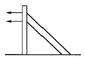
- 수평지선
- 궁형지선
- 2단지선
- V형지선
(정답률: 알수없음)
23. 본선의 전차선 및 조가선은 전선의 늘어짐을 적게 하기 위하여 민류장치를 조정하기 전에 시행하는 것을 무엇이라 하는가?
- Pre-sag 가선
- Slack
- Cant
- Pre-stretch
(정답률: 알수없음)
24. 트롤리선이 접촉부분에서 아크방전이 발생하여 가열단선되는 시간을 나타내는 식으로 가장 적당한 것은? (단, I는 아크전류[A]이고, t는 지속시간[sec]이다.)
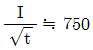
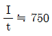
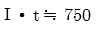
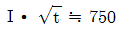
(정답률: 알수없음)
25. 전주의 기초강도 계산에 필요하지 않은 계수는?
- 지형계수
- 단연계수
- 강도계수
- 형상계수
(정답률: 알수없음)
26. 곡선로에서의 건축한계를 결정할 때 반지름 800m 이하의 원곡선에 대하여는 직선로에 있어서의 건축한계의 각 축에 어떤 값을 추가하여 곡선로에서의 건축한계로 정하는가? (단, R은 곡선로 반지름[m]이다.)
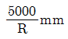
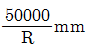
- 5000㎜
- 50000㎜
(정답률: 알수없음)
27. 전차선로에서 전선의 장력을 900kgf, 전주경간을 50m, 선로의 곡선반지름을 900m로 할 때의 곡선로에 있어서의 횡장력은 몇 kgf인가?
- 50
- 75
- 80
- 90
(정답률: 알수없음)
28. 전차선로의 전주의 설치 위치에 대한 기준으로 옳은 것은?(오류 신고가 접수된 문제입니다. 반드시 정답과 해설을 확인하시기 바랍니다.)
- 승강장에 설치하는 경우에는 그 면단으로부터 1.5m이상 가급적 멀리 설치한다.
- 전주는 부득이한 경우를 제외하고 차막이의 바로 뒤에 설치한다.
- 자동차 등이 통행하는 건널목에 인접하는 전주는 건널목 양측단으로부터 3m 이상 이격하여 설치한다.
- 낙석의 우려가 있는 장소에는 전주를 설치하여서는 아니된다.
(정답률: 알수없음)
29. 전차서의 활차식 자동장력조정장치에서 표준높이에 있던 장력조정용 중추가 표준높이보다 2m 아래로 처지면 실제 전차선의 신장길이는 몇 m 인가? (단, 활차식 장력조정장치의 활차비는 4:1이다.)
- 0.5
- 1
- 1.5
- 2
(정답률: 알수없음)
30. 지선과 전주와의 설치 각도는 몇 도를 표준으로 하는가?
- 25°
- 30°
- 45°
- 60°
(정답률: 알수없음)
31. 다음 중 지점의 종류가 아닌 것은?
- 이동지점
- 힌지지점
- 고정지점
- 정정지점
(정답률: 알수없음)
32. 경사재의 강도계산에 이용되는 경사재의 중복수는 동일장소에서 경사재가 겹치는 방법을 나타낸 것으로 일반적인 4각 철주의 경우, 이것이 단경사재라면 사재의 중복수는 얼마인가?
- 2
- 4
- 6
- 8
(정답률: 알수없음)
33. 응력계산에서 전선의 중량은 어떤 하중을 적용하는가?
- 수직분포하중
- 수직편심하중
- 수평분포하중
- 수평집중하중
(정답률: 알수없음)
34. 압축력을 받는 상부주재를 2본으로 하고 인장력을 받는 하부주재는 1본으로 하여 양단에 부재를 붙여 전주에 취부하는 구조의 빔(Beam)은?
- 평면빔
- V형빔
- 4각빔
- 강관빔
(정답률: 알수없음)
35. 단면 2차 모멘트의 용도로 볼 수 없는 것은?
- 단면계수와 단면 2차 반지름 계산
- 강의 현상, 처짐의 깊이, 수직하중 계산
- 휨웅력도, 전단응력도의 계산
- 단면 극2차 모멘트, 단면의 주축 계산
(정답률: 알수없음)
36. 단독 지지주에서 지지점의 높이가 6.5m인 전차선에 125kgf의 수평집중하중이 작용하는 경우, 지면과의 경계점 모멘트는 몇 kgfㆍm 인가?
- 19.2
- 72.7
- 318.7
- 812.5
(정답률: 알수없음)
37. 구조물을 구성하고 있는 부재와 부재가 연결된 곳을 무엇이라 하는가?
- 반력
- 트러스
- 절점
- 지점반력
(정답률: 알수없음)
38. 전기철도 구조물의 강도 계산시 전선, 애자, 구조물 등의 자체의 자중이 적용되는 하중은?
- 수직하중
- 수평하중
- 충격하중
- 특수하중
(정답률: 알수없음)
39. ‘여러 힘의 한점에 대한 모멘트의 대수합은 그들 합력의 그 점에 대한 모멘트와 같다‘라고 하는데 이것을 바리니온의 정리라고 한다. 이 정리는 다음 중 무엇을 구할 떄 사용하는가?
- 힘의 모멘트
- 합력의 작용점
- 우력
- 우력 모멘트
(정답률: 알수없음)
40. 전주 기초를 시공하고자 할 때 하중의 일부를 측면 흙의 압력으로 지지하도록 한 것으로 빔을 지지하는 철주 및 인류주에 지선을 설치하지 않기 위하여 사용하는 기초는?
- 중력형 블록기초
- 앵커볼트 기초
- 푸싱 기초
- 우울통형 기초
(정답률: 알수없음)
3과목: 전기자기학
41. 자계의 실효값이 1nA/m인 평면 전자파가 공기 중에서 이에 수직되는 수직 단면적 10m2를 통과하는 전력은 몇 [W]인가?
- 3.77×10-2
- 3.77×10-3
- 3.77×10-4
- 3.77×10-6
(정답률: 알수없음)
42. 두 종류의 금속으로 하나의 폐회로를 만들고 여기에 전류를 흘리면 양 접속점에서 한 쪽은 온도가 올라가고, 다른 쪽은 온도가 내려가서 열의 발생 또는 흡수가 생기고, 전류를 반대 방향으로 변화시키면 열의 발생부와 흡수부가 바뀌는 현상이 발생한다. 이 현상을 지칭하는 효과로 알맞은 것은?
- Pinch 효과
- Peltier 효과
- Thomson 효과
- Seebeck 효과
(정답률: 알수없음)
43. 진공 중에서 전계
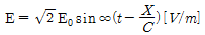
인 평면 전자파가 있을 때 자계의 실효값은 약 몇 [A/m]인가?- 1.3×10-3E0
- 2.7×10-3E0
- 5.4×10-3E0
- 8.1×10-3E0
(정답률: 알수없음)
44. 대전 도체 표면의 전계의 세기는?
- 곡률이 크면 커진다.
- 곡률이 크면 적어진다.
- 평면일 때 가장 크다.
- 표면 모양에 무관하다.
(정답률: 알수없음)
45. 그림에서 직선도체 바로 아래 10cm 위치에 자칭이 나란히 있다고 하면 자칭에 작용하는 회전력은 약 몇 [Nㆍm/rad]인가? (단, 도체의 전류는 10A, 자칭의 자극의 세기는 10-5Wb이고, 자칭의 길이는 10cm이다.)
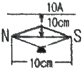
- 1.59×10-5
- 7.95×10-7
- 15.9×10-5
- 79.5×10-7
(정답률: 알수없음)
46. 단면적 15cm2의 자석 근처에 같은 단면적을 가진 철편을 놓을 때 그 곳을 통하는 자속이 3×10-4Wb이면 철편에 작용하는 흡인력은 약 몇 [N] 인가?
- 12.2
- 23.9
- 36.6
- 48.8
(정답률: 알수없음)
47. 반지름이 20cm인 도채원판이 그 축에 평행이고, 세기가 2.4×103AT/m인 균일자계내에서 1분간에 1800회의 회전운동을 하고 있다. 이 원판의 축과 원판 주위 사이에 2Ω의 저항체를 접속시킬 때, 이 저항에 흐르는 전류는 약 몇[mA]인가? (단, 원판의 저항은 무시하고, 원판의 투자율은 공기의 투자율과 같다고 가정한다.)
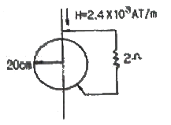
- 2.8
- 3.8
- 5.7
- 11.4
(정답률: 알수없음)
48. 반지름이 1m인 고립 도체구의 정전용량은 약 몇 [pF]인가?
- 1.1
- 11
- 111
- 1111
(정답률: 알수없음)
49. 30V/m의 전계내의 60V되는 점에서 1C의 전하를 전계방향으로 70cm 이동한 경우, 그 점의 전위는 몇 [V]인가?
- 9
- 21
- 39
- 51
(정답률: 알수없음)
50. 자계의 벡터 포텐셜(vector potential)을 A[Wb/m]라 할 때 도체 주위에서 자계 B[Wb/m2]가 시간적으로 변화하면 도체에 발생하는 전계의 세기 E[V/m]는?
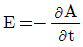
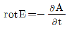
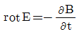
- E = rot B
(정답률: 알수없음)
51. 진공 중에 전하량이 3×106C인 두 개의 내전체가 서로 떨어져 있고, 상호간에 작용하는 힘이 9×105N 일 때, 이들 사이의 거리는 몇 [m] 인가?
- 2
- 3
- 4
- 6
(정답률: 알수없음)
52. 비유전율 εx=5인 유전체 중에서 전속일도가 4×10-4C/m2일 때 분극의 세기는 몇 [C/m2]인가?
- 1.6×10-4
- 2.4×10-4
- 3.2×10-4
- 4.8×10-4
(정답률: 알수없음)
53. 평면도체 표면에서 진공내 d[m]의 거리에 정전하 Q[C]가 있을 때, 이 전하를 무한 원까지 운반하는데 요하는 일은 몇 [J]인가?
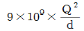
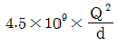
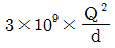
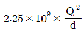
(정답률: 알수없음)
54. 환상 철심에 권수 NA인 A코일과 권수 NB인 B코일이 있을 때 코일 A의 자기인덕런스가 LA[H]라면 두 코일간의 상호인덕턴스[H]는? (단, A코일과 B코일간의 누설자속은 없는 것으로 한다.)
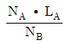
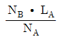
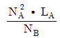
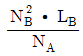
(정답률: 알수없음)
55. 두 유전체의 경계면에 대한 설명 중 옳은 것은?
- 두 유전체의 경계면에 전계가 수직으로 입사하면 두 유전체내의 전계의 세기는 같다.
- 유전율이 작은 쪽에 전계가 입사할 때 입사각은 굴절각 보다 크다.
- 경계면에서 정전력은 전계가 경계면에 수직으로 입사할 때 유전율이 큰 쪽에서 작은 쪽으로 작용한다.
- 유전율이 큰 쪽에서 작은 쪽으로 전계가 경계면에 수직으로 입사할 때 유전율이 작은 쪽의 전계의 세기가 작아진다.
(정답률: 알수없음)
56. 도전율 σ=4[S/m], 비투자율 μ1=1, 비유전율 εf=81인 바닷물 중에서 최소한 유전손실정절(tan δ)이 100 이상이 되기 위한 주파수 범위[MHz]는?
- f≤2.23
- f≤4.45
- f≤8.89
- f≤17.78
(정답률: 알수없음)
57. 유전체에 작용하는 힘과 관련된 사항으로 전계 중의 두 유전체가 경계면에서 받는 변형력을 무엇이라 하는가?
- 콜롬의 힘
- 맥스웰의 응력
- 톰슨의 응력
- 불타의 힘
(정답률: 알수없음)
58. 유전체에서의 변위 전류에 대한 설명으로 옳은 것은?
- 유전체의 굴절률이 2배가 되면 변위 전류의 크기도 2배가 된다.
- 변위 전류의 크기는 투자율의 값에 비례한다.
- 변위 전류는 자계를 발생시킨다.
- 전속밀도의 공간적 변화가 변위 전류를 발생시킨다.
(정답률: 알수없음)
59. 그림과 같이 환상철심에 2개의 코일을 감고, 1차코일을 전지에, 2차코일을 검류계 G에 연결한다. 다음의 각 경우 중 검류계에 흐르는 전류의 방향이 옳게 언급된 것은?
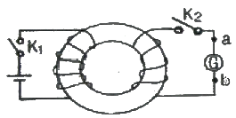
- 스위치 K2를 닫은 다음 스위치 K1을 닫으면 전류는 b에서 a로 흐른다.
- 스위치 K1을 닫은 후 잠깐 있다가 스위치 K2를 닫으면 전류는 a에서 b로 흐른다.
- 스위치 K1과 K2를 닫아 놓고 스위치 을 급히 열면 전류는 b에서 a로 흐른다.
- 스위치 K1과 K2를 닫아 놓고 스위치 를 급히 열면 전류는 b에서 a로 흐른다.
(정답률: 알수없음)
60. 도체에 교류가 흐르는 경우 표피효과에 대한 설명으로 가장 알맞은 것은?
- 도체 표면의 전류 밀도가 커지고 중심이 될수록 전류 밀도가 작아지는 현상
- 도체 표면의 전류 밀도가 작아지고 중심이 될수록 전류 밀도가 커지는 현상
- 도체 표면의 전류 밀도가 커지고 중심이 될수록 전류 밀도가 더욱 커지는 현상
- 도체 표면의 전류 밀도가 작아지고 중심이 될수록 전류 밀도가 더욱 작아지는 현상
(정답률: 알수없음)
4과목: 전력공학
61. 154kV 3상 1회선 송전선로 1선의 리액턴스가 25Ω이고 전류가 40DA일 때 %리액턴스는 약 얼마인가?
- 6.49%
- 10.22%
- 11.25%
- 19.48%
(정답률: 알수없음)
62. 3상 3선식 송전선로를 연가(transposition)하는 주된 목적은?
- 전압강하를 방지하기 위하여
- 송전선을 절약하기 위하여
- 고도를 표시하기 위하여
- 선로정수를 평행시키기 위하여
(정답률: 알수없음)
63. 다음 중 현재 널리 사용되고 있는 GCB(Gas Clrcuit Breaker)용 가스는?
- SF6가스
- 알곤가스
- 네몬가스
- N2가스
(정답률: 알수없음)
64. 발전기나 변압기의 내부고장 검출에 가장 많이 사용되는 계전기는?
- 멱상계전기
- 비율차동계전기
- 과전압계전기
- 과전류계전기
(정답률: 알수없음)
65. 정격 10kVA의 주상변압기가 있다. 이것의 2차측 일부하곡선이 그림과 같을 때 1일의 부하율은 몇 [%]인가?
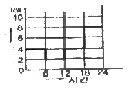
- 52.35
- 54.35
- 56.25
- 58.25
(정답률: 알수없음)
66. 총낙차 80.9m, 사용수량 30m3/s인 발전소가 있다. 수로의 길이가 3800m, 수로의 구배가 1/2000, 수압철관의 손실낙차를 1m라고 하면 이 발전소의 출력은 약 몇 [kW]인가? (단, 수차 및 발전기의 종합효율은 83%라 한다.)
- 15000
- 19000
- 24000
- 28000
(정답률: 알수없음)
67. 가공전선의 구비조건으로 옳지 않은 것은?
- 도전율이 높을 것
- 기계적인 강도가 클 것
- 비중이 클 것
- 신장률이 클 것
(정답률: 알수없음)
68. 화력발전소에서 재열기의 목적은?
- 공기를 가열한다.
- 급수를 가열한다.
- 증기를 가열한다.
- 석탄을 건조한다.
(정답률: 알수없음)
69. 파동잉피던스가 500Ω인 가공송전선 1km당의 인덕턴스는 약 몇 [mH/km]인가?
- 1.67
- 2.67
- 3.67
- 4.67
(정답률: 알수없음)
70. 송전단전압이 3.4kV, 수전단전압이 3kV인 배전선로에서 수전단의 부하를 끊은 경우 수전단전압이 3.2kV로 되었다면 전압변동률은 약 몇 [%] 인가?
- 6.25
- 6.67
- 12.5
- 13.3
(정답률: 알수없음)
71. 교류 송전방식에 비교하여 직류 송전방식을 설명할 때 옳지 않은 것은?
- 선로의 리액턴스가 없으므로 안정도가 높다.
- 유전체손은 업시만 충전용량이 커지게 된다.
- 코로나손 및 전력손실이 적다.
- 표피효과나 근접효과가 없으므로 실효저항의 증대가 없다.
(정답률: 알수없음)
72. 피뢰기가 구비하여야 할 조건으로 옳지 않은 것은?
- 속류의 차단 능력이 충분할 것
- 충격 방전 개시 전압이 높을 것
- 상용 주파 방전 개시 전압이 높을 것
- 방전 내량이 크면서 제한 전압이 낮을 것
(정답률: 알수없음)
73. 다음 중 원자로 내의 중성자 수를 적당하게 유지하기 위해 사용되는 제어봉의 재료로 알맞은 것은?
- 나트륨
- 베릴륨
- 카드뮴
- 경수
(정답률: 알수없음)
74. 선택접지(지락)계전기의 용도를 옳게 설명한 것은?
- 단일 회선에서 접지고장 회선의 선택 차단
- 단일 회선에서 접지전류의 방향 선택 차단
- 병행 2회선에서 접지고장 회선의 선택 차단
- 병행 2회선에서 접지사고의 지속시간 선택 차단
(정답률: 알수없음)
75. 경간이 200m인 가공 전선로가 있다. 사용전선의 길이는 경간보다 몇 [m] 더 길게 하면 되는가? (단, 사용전선의 1m당 무게는 2kg, 인장하중은 4000kg, 전선의 안전율은 2로 하고 풍압하중은 무시한다.)
- 1/2
- √2
- 1/3
- √3
(정답률: 알수없음)
76. 송전선로에 복도체를 사용하는 이유로 가장 알맞은 것은?
- 선로의 진동을 없앤다.
- 철탑의 하중을 평형화 한다.
- 코로나를 방지하고 인덕턴스를 감소시킨다.
- 선로를 뇌격으로부터 보호한다.
(정답률: 알수없음)
77. 중성점 비접지방식에서 가장 많이 사용되는 변압기의 결선 방법은?
- V-V
- Y-Y
- △-Y
- △-△
(정답률: 알수없음)
78. 다음 중 부하 전류의 차단에 사용되지 않는 것은?
- NFB
- OCG
- VCB
- OS
(정답률: 알수없음)
79. 다음 중 모선방식의 종류에 속하지 않는 것은?
- 단일 모선
- 2중 모선
- 3중 모선
- 환상 모선
(정답률: 알수없음)
80. 다음 중 송ㆍ배전선로에 대한 설명으로 옳지 않은 것은?
- 송ㆍ배전선로는 저항, 인덕턴스, 정전용량, 누설컨덕턴스라는 4개의 정수로 이루어진 연속된 전기회로이다.
- 송ㆍ배전선로의 전압강하, 수전전력, 송전손실, 안정도등을 계산하는데 선로정수가 필요하다.
- 장거리 송전선로에 대해서 정밀한 계산을 할 경우에는 분포 정수 회로로 취급한다.
- 송ㆍ배전선로의 선로정수는 원칙적으로 송전전압, 전류 또는 역률 등에 의해서 영향을 많이 받게 된다.
(정답률: 알수없음)
하중 = 중량 × 길이 = 67.7N/m × 10m = 677N
다음으로, 지지점 중앙의 처짐을 구하기 위해 다음의 공식을 사용한다.
f = (5wL^4)/(384EI)
여기서, w는 단위 길이당 하중, L은 스팬의 길이, E는 탄성계수, I는 y-y축의 관성모멘트를 나타낸다.
위의 값들을 대입하면,
f = (5 × 677N/m × (10m)^4)/(384 × 69000N/mm^2 × 339cm^4 × 10^-8m^4/cm^4) ≈ 7.5mm
따라서, 지지점 중앙의 처짐은 약 7.5mm이다.